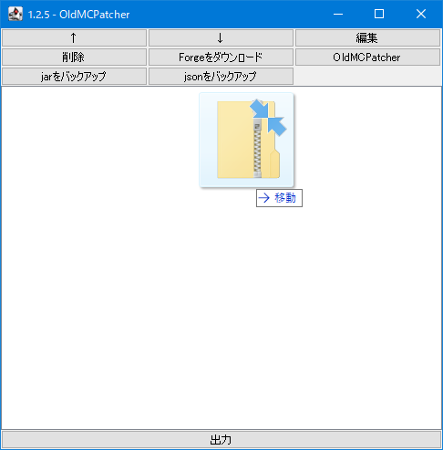
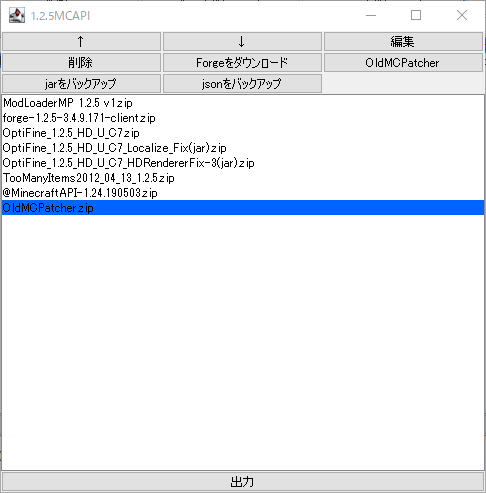
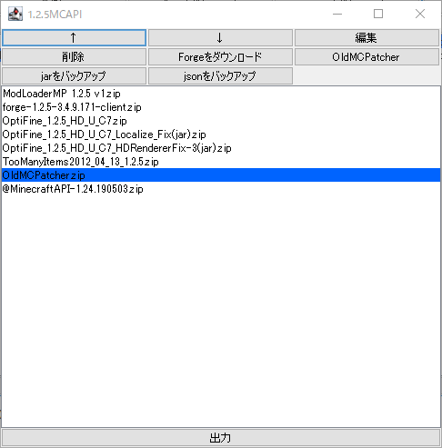
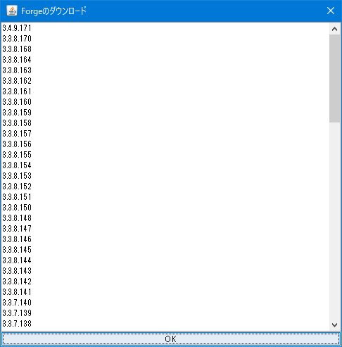

ことば
- Minecraft Launcher 2.0以降=新ランチャー
- Minecraft 1.0～1.5.2=旧Minecraft
- jarファイル=.minecraft/versions/バージョン/バージョン.jarのMinecraft本体のjarファイル
- jsonファイル=.minecraft/versions/バージョン/バージョン.jsonの設定ファイルファイル
OldMCPatcher
新ランチャーで旧Minecraftを動かせるようにするMODです。
ダウンロードリンク:https://github.com/kusaanko/OldMCPatcher/releases
サポートランチャーバージョン:2.x
サポートマインクラフトバージョン:1.0～1.5.2
概要
新ランチャーで旧Minecraftが正常に動作するようにするMODです。
このMODには以下のパッチが含まれます。
- ゲームディレクトリ変更パッチ
- サウンドダウンロード・ロードパッチ
- スキン適応パッチ
また、旧ランチャーと同様の起動方法に変更するので旧ランチャー推奨MODも動作します。
新ランチャーでの旧Minecraft起動の仕様
- 新ランチャーでは旧ランチャーと同様の起動はしてくれません。そのため、ウィンドウのタイトルを変更するMODなどはクラッシュします。
- ゲームディレクトリを変更した場合でもほとんどのバージョンではゲームディレクトリは変更されません。
- リソースサーバーが移動したのでリソースがダウンロードできません。つまり、音が出ません。ただし、過去に旧Minecraftを起動したことがあり、resourcesフォルダを持っている場合はゲームディレクトリに入れることで音がなります。
OldMCPatcherのパッチ内容
- 新ランチャーで設定したゲームディレクトリにMinecraftのファイルが生成、読み込みされるようにします。
- リソースのダウンロード元を新しいURLに変更し、適切にダウンロードします。読み込みにもパッチを当て、エラーなく音がなるようにします。
- 旧ランチャーと同様の動作にします。
- スキンを適切なサイトからダウンロードし読み込みます。
OldMCPatcherの導入方法
- MOD本体をダウンロードします。
- .minecraft/versionsフォルダ内にある起動したいMinecraftのバージョンのフォルダをコピー＆ペーストし、好きな名前に変更します（バージョン+お好きな名前を推奨します。）
- ペーストしたフォルダ内の.jar、.jsonファイルも同じ名前に変更します。
- jarファイル、ダウンロードしたOldMCPatcherを7-Zip等で開き、OldMCPatcherの中身をjarファイルの中にコピーします。
- jarファイル内のMETA-INFフォルダを削除します。
- jsonファイルをテキストエディタ等で開きます。
- 「"id": "変更前の名前"」という項目があるので、決めた名前に書き換えます。
- ※1の文を削除します。
- "mainClass": "net.minecraft.launchwrapper.Launch"を"mainClass": "net.minecraft.client.OldMCPatcher.Main"に書き換えます。
※1
"downloads": {
"client": {
"sha1": "4a2fac7504182a97dcbcd7560c6392d7c8139928",
"size": 4032098,
"url": "https://launcher.mojang.com/v1/objects/4a2fac7504182a97dcbcd7560c6392d7c8139928/client.jar"
},
"server": {
"sha1": "d8321edc9470e56b8ad5c67bbd16beba25843336",
"size": 1408470,
"url": "https://launcher.mojang.com/v1/objects/d8321edc9470e56b8ad5c67bbd16beba25843336/server.jar"
},
"windows_server": {
"sha1": "8eaf5909489d9b54fd9748ddbbb4b6870a1d3de6",
"size": 1589718,
"url": "https://launcher.mojang.com/v1/objects/8eaf5909489d9b54fd9748ddbbb4b6870a1d3de6/windows_server.exe"
}
},
※1は全く同じとは限らない。sha1、size、urlが変わっている場合もある。また、整形済みの文字なので実際は1行で書かれていることにも注意。
※1はjarファイルがバニラのものに書き換わらないようにするために削除している。試しに書いたまま起動するとバニラが起動してしまう。
以上の手順を行うことでOldMCPatcherの導入が完了となります。jar導入系MODであり、jsonの書き換えが必要なので手順は多いですが、頑張ってください。
スキン適応パッチ
スキン適応パッチはゲームディレクトリのresources/skin/playerSkin.zipファイルを読み書きします。容量は1KBを下回ると思います。
クラッシュレポート
クラッシュレポートに以下の文字が含まれていればOldMCPatcherのせいでクラッシュしています。
- net.minecraft.Launcher
- net.minecraft.client.OldMCPatcher
MCAddToJar

OldMCPatcher導入サポートソフト。
ダウンロードリンク:https://github.com/kusaanko/MCAddToJar/releases
サポートランチャーバージョン:2.x
サポートマインクラフトバージョン:1.0～1.5.2
概要
MCPatcherの新ランチャー対応版が私の環境では動かなかったので似たものを作りました。
上記のOldMCPatcherの導入を自動で行ってくれる機能もあります。（メイン機能？）
複数の便利機能を備えています。
Minecraft 1.0～1.5.2のみ対応。
～新ランチャーに対応。
Java 8以上を使って起動してください。
jarファイルにMODを導入
メイン機能ですね。7-Zipとか使わなくても自動で指定したzipもしくはjarMODの中身をjarファイルに入れてくれます。
jsonファイル書き換え
MCAddToJarの目玉機能です。これによりOldMCPatcherも導入可能となっています。
この機能は名前の通りjsonファイルを書き換えて新ランチャーで正常に起動できるようにしてくれます。コピーしてきただけではMOD環境が動きませんからね。
さらにOldMCPatcher導入時はmainClassの部分も変更してくれます。
1.2.5専用MOD、MCAPIに対応するためにLWJGLのリンクを更新する機能もついていますので、MCAPIが正常に起動します。
Forgeダウンロード機能
名前そのまま。Forgeを手動でサイトに行ってダウンロードしてってしなくてもバージョンを選ぶだけでダウンロードして追加してくれます。
バニラダウンロード機能
jarファイルに追加するMODの順番を変えたり、バージョンを更新したい際にはバニラの状態をコピーしてそのコピーしたファイルを書き換えています。
このツールを使用する際にはバニラのデータが必要なのですが、バニラの状態のファイルが無くても、公式サイトからダウンロードします。
OldMCPatcher自動導入機能
ワンクリックでOldMCPatcherを追加、出力時にjsonファイルを書き換えて起動できるようにしてくれます。上に書いた複雑な操作は不要です。
バージョンコピー機能
バージョンをコピーする際、通常はたくさんの名称変更が必要ですが、ワンクリックで行なえます。バージョン名変更機能もついています。
OldMCPatcherの自動ダウンロード
起動後OldMCPatcher.zipのSHA-256値を確認、サーバーにある値と比較後バージョンを特定し、最新版でなければアップデートします。
不正なファイルだったとしても公式のファイルをダウンロードしてくれます。
コマンドで起動
コマンドプロンプト・ターミナル・端末等でjava -jar MCAddToJar.jar .minecraftのディレクトリと入力して起動すると.minecraftのディレクトリを指定して起動できます。
例:java -jar MCAddToJar.jar C:\Users\kusaanko\Desktop\.minecraft
上の例のコマンドを実行するとC:\Users\kusaanko\Desktop\.minecraftというディレクトリを.minecraftのディレクトリに設定できます。
使い方
スタート画面
起動すると.minecraft/versionsフォルダ内のバージョンを読み込みます。リストになっているので、書き換えたいバージョンをダブルクリックして開きましょう。
過去に開いたことがあるバージョンは一番上に来るのですぐに開けます。
コピー
既存のバージョンをコピーします。
バージョン名がすでに存在していればコピーすることはできません。「マインクラフトのバージョン+わかりやすくするための名前」としておくのがベストです。
名前変更

既存のバージョンの名前を変えます。
手動で変えようと思うとフォルダ名、jarファイル名、jsonファイル名、json内のidを書き換える必要があります。
こちらの機能を使えば名前を決めるだけで勝手に変えてくれます。
バージョンを開く
リストの中からバージョンを選んでダブルクリックすると、初回選択時はこのような画面が出ます。
「1.2.5MOD」のようにバージョン名にMinecraftのバージョンが書いてあると自動検出して選択してくれますが「MOD」などMinecraftのバージョンが書かれていないと自動検出できないのでバージョンを手動で選択してください。
バージョンを消した場合
MCAddToJar起動時にこのような画面が出ます。消したのか名前を変えたのかを選んでください。
名前を変えた際はどういう名前に変えたのかリストから選択してください。
編集画面
スタート画面で編集したいバージョンをダブルクリックするとこの画面が開きます。この画面でjarファイルに追加するMODを編集します。
MODの追加
空白部分にファイルをドラッグアンドドロップすると一番下に追加されます。
出力
出力ボタンを押して出力します。MODリストが空の場合は何もしません。
出力後は新ランチャーのバージョンをこのバージョンに設定して起動してください。うまく起動するはずです。
OldMCPatcherを追加するのを忘れずに。
↑・↓
MODの順番を入れ替えます。MODを選択し、ボタンを押すことで上または下に移動します。
編集

MODの中のファイルで、どれを追加するかを選びます。チェックが入っていれば追加、入っていなければ追加しないです。
削除
選択中のファイルをリストから消します。ファイルは消えません。リストから消えるだけです。
バニラのダウンロード

jarファイルを改造する前の状態のファイルをダウンロードします。
バニラのバージョンをコピーした際は出力時にそのファイルをコピーしてオリジナルとして保存するのでこの操作は不要です。
バニラのデータではないバージョンをコピーした際にこの操作を実行してください。
Forgeのダウンロード
Forgeバージョンの読み込みには時間がかかる場合と、すぐ終わる場合があることに注意してください。1分もあれば読み込み終わると思います。
バージョンを選択、OKをクリックするとダウンロードが始まります。ForgeはMCAddToJarが存在するフォルダの中にあるforgeフォルダの中にダウンロードされます。
すでにダウンロードしていてforgeフォルダにForgeがあればOKを押したらすぐにMODリストに追加されます。
OldMCPatcher
MCAddToJar.jarのあるフォルダにOldMCPatcher.zipをダウンロードしておくことで、ワンクリックで追加できます。
OldMCPatcher.zipがダウンロードされていなければ配置するファイル名も教えてくれます。
jarをバックアップ
jarファイルをzipファイルに圧縮してバックアップしてくれます。
jsonをバックアップ
jsonファイルをzipファイルに圧縮してバックアップしてくれます。
profilesフォルダ
MCAddToJar.jarのあるフォルダにprofilesフォルダが出来上がると思います。その中には何のMODを追加する、順番はどうするといった情報が書かれているprofileファイルがあります。
絶対に消さないようにしてください。アンインストール時は消してください。